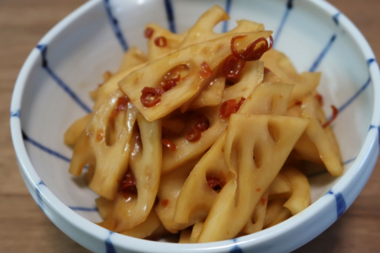

店舗名
あれば店のキャッチコピー


- 
創業〇年の常連さんで賑わうお店。お昼時はお店の前に行列が出来ています。前日からコトコト仕込んだ甘めの出汁にどこどこ産の小麦粉を使ったコシの強い太麺。お店一番の人気メニューはワカメ肉うどん。大人から子供まで幅広い年齢の方に愛されています。店長おすすめの食べ方は、トッピングの半熟卵を乗せる、欲張り食べ！サイドメニューの稲荷寿司もおすすめです。
店の特徴メーター

基本情報
| 店名 | |
|---|---|
| 電話番号 | |
| 予約可否 | |
| 住所 | |
| アクセス | |
| 営業時間 | |
| 支払方法 | |
| 席数 | |
| 概要 | |
| 喫煙・喫煙 | |
| 駐車場 | |
| サイト |
＃食べレポ